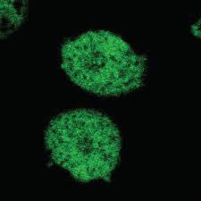
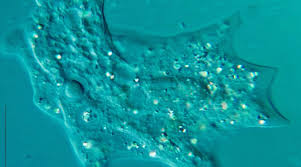

Connect Neural Network
직접 연결 수립
생물학적 영감과 캐릭터의 세계관이 만나는 디지털 아카이브.
생물학적 영감과 캐릭터의 진화 과정을 탐구합니다.
이 캐릭터는 자연계의 유기적인 곡선과 독창적인 민트초록 퍼스널 컬러를 기반으로 디자인되었습니다. 현미경으로 관찰하듯, 자세히 들여다볼수록 더 많은 곰팡이를 발견할 수 있습니다.
모든 것의 시작. 생물학에 처음 관심을 가지게 된 시점입니다.
생명의 신비를 탐구하며 지식을 쌓아가는 과정입니다. 끊임없는 실험과 관찰이 이루어졌습니다.
지금 이 순간, 캐릭터는 최신의 기술과 디자인을 접목하여 완성되었습니다.
대상의 주요 관심사와 특징입니다.
생명의 구조와 원리를 탐구합니다.
상상 속의 생명체를 시각화합니다.
끊임없이 멈추지 않고 성장합니다.
새로운 시도를 두려워하지 않습니다.
수집된 시각 데이터


직접 연결 수립